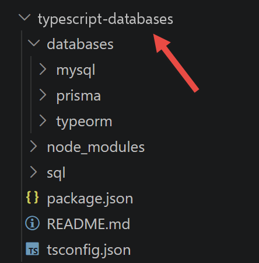
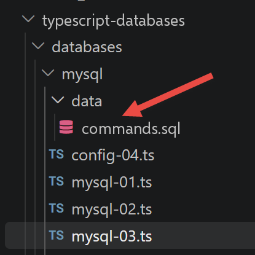

7. 数据库访问

接下来的几章将介绍从 TypeScript 脚本访问数据库，以此完善本课程，内容借鉴了 “使用 MySQL DBMS”和“使用 SQLAlchemy ORM”两章 ，它们出自课程 “Python 3 与 Flask 框架入门”（2019 年）。我们依次介绍三种方法：使用原生 mysql2 驱动直接访问 DBMS，然后是两种 ORM（对象关系映射）方法——TypeORM 和 Prisma。
7.1. 直接访问数据库
本章附带两个 SQL 脚本，用于创建测试数据库：dbpersons （只有一张表，用于原生驱动那一章）和 dbschool （四张相互关联的表，用于两个 ORM 章节）。

7.1.1. 准备 [dbpersons] 数据库
dbpersons 数据库只包含一张表 persons，其结构与 Python 课程中使用的相同（列 id, first\_name, last\_name， age，并对 (last\_name, first\_name) 这一对列设置唯一性约束）。下面的 SQL 脚本 sql/create_dbpersons.sql 创建数据库、应用程序用户和该表，然后向其中插入五个任意的人员：
| -- create_dbpersons.sql
-- Recreates the [dbpersons] database used by the chapter "Accessing MySQL with the
-- native [mysql2] driver", with arbitrary data (the originals of the 2020
-- Python/Flask course being no longer available).
--
-- Usage:
-- mysql -u root -p < create_dbpersons.sql
--
-- Creates the database, the application user [admpersons/nobody] (same
-- credentials as the original course) and the [persons] table.
DROP DATABASE IF EXISTS dbpersons;
CREATE DATABASE dbpersons CHARACTER SET utf8mb4 COLLATE utf8mb4_unicode_ci;
CREATE USER IF NOT EXISTS 'admpersons'@'localhost' IDENTIFIED BY 'nobody';
GRANT ALL PRIVILEGES ON dbpersons.* TO 'admpersons'@'localhost';
FLUSH PRIVILEGES;
USE dbpersons;
CREATE TABLE persons (
id INT PRIMARY KEY,
first_name VARCHAR(30) NOT NULL,
last_name VARCHAR(30) NOT NULL,
age INTEGER NOT NULL,
UNIQUE (last_name, first_name)
);
-- arbitrary data (same persons as the examples of the original course)
INSERT INTO persons (id, first_name, last_name, age) VALUES
(1, 'Paul', 'Langevin', 48),
(2, 'Sylvie', 'Lefur', 70),
(3, 'Pierre', 'Nicazou', 35),
(4, 'Geraldine','Colou', 26),
(5, 'Paulette', 'Girond', 56);
|
要创建这个数据库（MySQL），可以使用 Laragon 中的 [HeidiSQL] 工具。我们之前已经用过它。
- 在 [1] 中，启动所有 Laragon 服务，这会启动 MySQL DBMS；
- 在 [2] 中，进入数据库管理工具 [HeidiSQL]；
通过 [1-2]，依次运行项目中的两个 SQL 文件：
仍在 [HeidiSQL] 中，按 F5 刷新显示：
现在我们已经可以使用这两个数据库了。
7.1.2. 脚本 [mysql-01]
初识 mysql2 驱动（mysql2/promise 模块，它提供基于 Promise 而非回调的 API）：打开到 dbpersons 的连接，然后关闭它。这与 Python 脚本 [mysql_01] （第 16 章）的做法相同。
| // databases/mysql/mysql-01.ts
// 第一步：连接到 MySQL 数据库 [dbpersons]，然后
// 断开连接。移植自 Python/Flask 课程中的 Python 脚本 [mysql_01]。
import mysql from 'mysql2/promise';
// 连接到 MySQL 数据库 [dbpersons]
// 用户身份为 (admpersons, nobody)
const USER = 'admpersons';
const PWD = 'nobody';
const HOST = 'localhost';
const DATABASE = 'dbpersons';
// 开始
let connection: mysql.Connection | undefined;
try {
console.log('Connecting to the MySQL DBMS...');
// 连接
connection = await mysql.createConnection({ host: HOST, user: USER, password: PWD, database: DATABASE });
// 后续
console.log(
`Successful MySQL connection to database=${DATABASE}, host=${HOST} as user=${USER}, passwd=${PWD}`,
);
} catch (error) {
// 显示错误
console.log(`The following error occurred: ${error}`);
} finally {
// 如果连接已打开，则关闭连接
if (connection) {
await connection.end();
}
}
|
我们来说明这段代码：
- 第 16 行：[mysql.createConnection({ host: HOST, user: USER, password: PWD, database: DATABASE })] ——打开一个单一的异步连接——createConnection 返回一个 Promise<Connection>，因此要使用
await；这相当于 Python 中的 mysql.connector.connect(...) ；
- 第 29 行：[connection.end()] ——在
finally 块中优雅地关闭连接，无论是否发生错误——连接 被声明在 try 块之外（类型为 mysql.Connection | undefined），以便在这一层仍可访问。
我们来运行这个脚本：
npx tsx databases/mysql/mysql-01.ts
执行结果：
| Connecting to the MySQL DBMS...
Successful MySQL connection to database=dbpersons, host=localhost as user=admpersons, passwd=nobody
|
7.1.3. 脚本 [mysql-02]
这一次，连接被封装在一个可复用的函数 connect(host, database, login, pwd)中，先用有效的凭据调用它，再用无效的凭据调用第二次，以观察驱动返回的错误。对应的 Python 脚本名为 **[mysql\_02]**。
| // databases/mysql/mysql-02.ts
// 在这个新脚本中，数据库连接被隔离在一个函数里。
// 移植自 Python 脚本 [mysql_02]。
import mysql from 'mysql2/promise';
// 使用 (login, pwd) 连接到服务器 [host] 上的数据库 [database]，然后断开连接
// 如果出现问题则抛出异常
async function connect(host: string, database: string, login: string, pwd: string): Promise<void> {
let cnx: mysql.Connection | undefined;
try {
// 连接
cnx = await mysql.createConnection({ host, user: login, password: pwd, database });
console.log(
`Successful connection to database=${database}, host=${host} as user=${login}, passwd=${pwd}`,
);
} finally {
// 如果连接已打开，则关闭连接
if (cnx) {
await cnx.end();
console.log('Successful disconnection\n');
}
}
}
// ──────────────────────────────────────────── main
// 连接凭据
const USER = 'admpersons';
const PASSWD = 'nobody';
const HOST = 'localhost';
const DATABASE = 'dbpersons';
// 连接一个已存在的用户
try {
await connect(HOST, DATABASE, USER, PASSWD);
} catch (error) {
// 显示错误
console.log(String(error));
}
// 连接一个不存在的用户
try {
await connect(HOST, DATABASE, 'xx', 'xx');
} catch (error) {
// 显示错误
console.log(String(error));
}
|
我们来说明这段代码：
- 第 9 行：[async function connect(host, database, login, pwd): Promise<void>] ——一个 async 函数，它不返回任何值，但可能抛出异常——它自己不捕获连接错误，而是让错误向上传播给调用者；
- 第 40 行：[await connect(HOST, DATABASE, 'xx', 'xx')] ——第二次调用，使用 MySQL 端并不存在的用户 “xx” ，会抛出一个异常，由外层的
catch 块 显示出来。
我们来运行这个脚本：
npx tsx databases/mysql/mysql-02.ts
执行结果：
| Successful connection to database=dbpersons, host=localhost as user=admpersons, passwd=nobody
Successful disconnection
Error: Access denied for user 'xx'@'localhost' (using password: YES)
|
与版本相关的问题：在较新的 MySQL 服务器（8.4 及更高版本）上，这第二次调用可能产生不同的消息：“Error: Plugin 'mysql_native_password' is not loaded” 而不是“Access denied for user 'xx'@'localhost'.”其原因与脚本无关：为了避免泄露某个账户是否存在（防枚举保护），MySQL 在以未知用户登录时会模拟一次身份验证交换——而这个模拟被硬编码为使用旧版插件 mysql_native_password，自 MySQL 8.4 起该插件默认已被禁用。该脚本所演示的原理（在凭据无效时抛出并拦截异常）依然成立；若要恢复显示原来的消息，请在服务器的 `my.ini` 文件中的 `[mysqld]` 下面添加 `mysql_native_password=ON` ，然后重启服务器。
7.1.4. 脚本 [mysql-03]
我们知道如何连接；现在通过连接发出一条 SQL 命令，（重新）创建 “persons” 表，其结构稍有不同（没有 “id” 列，改用复合主键）。对应的是 Python 脚本 [mysql_03]。
| // databases/mysql/mysql-03.ts
// 现在我们已经知道如何连接，接下来在连接上发出 SQL 语句：
// 我们（重新）创建数据库 [dbpersons] 的 [persons] 表。
// 移植自 Python 脚本 [mysql_03]。
import mysql from 'mysql2/promise';
// 在连接上执行一条更新查询
async function executeSql(connection: mysql.Connection, query: string): Promise<void> {
await connection.query(query);
}
// ──────────────────────────────────────────── main
// 连接凭据
const ID = 'admpersons';
const PWD = 'nobody';
const HOST = 'localhost';
const DATABASE = 'dbpersons';
// 我们一步一步来
let connection: mysql.Connection;
try {
// 连接——mysql2 在各自独立的事务中执行每条查询，
// 默认自动提交（相当于 Python 端的 AUTOCOMMIT=True）
connection = await mysql.createConnection({ host: HOST, user: ID, password: PWD, database: DATABASE });
} catch (error) {
console.log(`The following error occurred: ${error}`);
process.exit(1);
}
// 如果 persons 表存在则删除它
// 如果它不存在，就会出现错误——我们忽略它
try {
await executeSql(connection, 'drop table persons');
} catch {
// 已忽略
}
// 创建 persons 表
const query =
'create table persons (id int PRIMARY KEY, first_name varchar(30) NOT NULL, last_name varchar(30) NOT NULL, ' +
'age integer NOT NULL, unique(last_name,first_name))';
try {
await executeSql(connection, query);
console.log(`${query}: query succeeded`);
} catch (error) {
console.log(`The following error occurred: ${error}`);
} finally {
await connection.end();
}
|
我们来说明这段代码：
- 第 9 行：[await connection.query(query)] — connection.query() 直接执行一个不带参数的 SQL 字符串——我们将在脚本 [mysql-05] 中看到更安全的参数化版本，它使用 execute() ；
- 第 28 行：[await executeSql(connection, 'drop table persons')] ——尝试在一个空的 try/catch 块中删除该表：如果该表尚不存在，MySQL 错误会被直接忽略。
我们来运行这个脚本：
npx tsx databases/mysql/mysql-03.ts
执行结果：
| create table persons (id int PRIMARY KEY, first_name varchar(30) NOT NULL, last_name varchar(30) NOT NULL, age integer NOT NULL, unique(last_name,first_name)): query succeeded
|
7.1.5. 可复用的模块：[mysql-module.ts]
在编写主脚本 [mysql-04]（它执行整个 SQL 命令文件）之前，我们先把一组命令的执行逻辑（带事务或不带事务）以及每条命令结果的显示（SELECT 返回的行，或 INSERT/UPDATE/DELETE 修改的行数）提取到一个模块中。对应的 Python 模块名为 [mysql_module]。
| // databases/mysql/mysql-module.ts
// 在已打开的 MySQL 连接上执行一组（或一个文件中的）SQL 命令的
// 可复用函数。移植自 Python 模块 [mysql_module]。
import type { Connection, FieldPacket, ResultSetHeader, RowDataPacket } from 'mysql2/promise';
import { readFile } from 'node:fs/promises';
// 显示一条 SQL 命令的结果（mysql2 query() 的结果）
// - 如果有 [fields] 数组，则它是一条 SELECT：我们显示各列，
// 然后显示各行；
// - 否则，它是一条更新语句（INSERT/UPDATE/DELETE/DDL）：我们
// 显示被修改的行数（相当于 cursor.rowcount）。
function displayInfo(rows: RowDataPacket[] | ResultSetHeader, fields: FieldPacket[] | undefined): void {
if (fields && fields.length > 0) {
// 这是一条 SELECT——fields 描述所请求的列
const titles = fields.map((f) => f.name);
console.log(titles.join(', '));
console.log('*'.repeat(titles.join(', ').length));
for (const row of rows as RowDataPacket[]) {
console.log(titles.map((t) => row[t]));
}
console.log('*'.repeat(titles.join(', ').length));
} else {
// 没有描述任何列——更新语句
const header = rows as ResultSetHeader;
console.log(`number of modified rows: ${header.affectedRows}`);
}
}
// 使用已打开的连接 [connection]
// 在该连接上执行列表 [sqlCommands] 中包含的 SQL 命令
// （每个元素一条命令；空行或以 # 开头的行会被忽略）
// - 如果 verbose=true，则每执行一条 SQL 语句之后都会显示
// 其成功或失败的提示；
// - 如果 stop=true，函数在遇到第 1 个错误时就会停止，否则
// 会执行所有命令；
// - 如果 withTransaction=true，任何错误都会取消此前执行的
// 所有 SQL 语句（回滚）；否则每条命令都会
// 独立提交（mysql2 的默认行为）；
// 函数返回一个数组 [error1, error2, ...]
export async function executeListOfCommands(
connection: Connection,
sqlCommands: string[],
verbose = false,
stop = true,
withTransaction = true,
): Promise<string[]> {
const errors: string[] = [];
if (withTransaction) {
await connection.beginTransaction();
}
try {
for (const rawCommand of sqlCommands) {
// 删除当前命令开头和结尾的空白
const command = rawCommand.trim();
// 空命令或注释？转到下一条
if (command === '' || command[0] === '#') {
continue;
}
// 执行当前命令
try {
const [rows, fields] = await connection.query(command);
// 没有错误
if (verbose) {
console.log(`[${command}]: Successful execution`);
}
displayInfo(rows as RowDataPacket[], fields);
} catch (error) {
const msg = `${command}: Error (${error})`;
errors.push(msg);
if (verbose) {
console.log(msg);
}
// 要停止吗？
if (withTransaction || stop) {
return errors;
}
}
}
return errors;
} finally {
// 如果存在事务，则提交/回滚事务
if (withTransaction) {
if (errors.length > 0) {
await connection.rollback();
} else {
await connection.commit();
}
}
}
}
// 使用已打开的连接 [connection]
// 在该连接上执行文本文件 [sqlFilename] 中包含的
// SQL 命令（每行一条命令）
export async function executeFileOfCommands(
connection: Connection,
sqlFilename: string,
verbose = false,
stop = true,
withTransaction = true,
): Promise<string[]> {
try {
const content = await readFile(sqlFilename, 'utf-8');
return await executeListOfCommands(connection, content.split('\n'), verbose, stop, withTransaction);
} catch (error) {
return [`The file ${sqlFilename} could not be processed: ${error}`];
}
}
|
我们来说明这段代码：
- 第 45 行：[if (withTransaction) { await connection.beginTransaction(); }] ——mysql2 默认处于 AUTOCOMMIT 模式（每条查询单独提交）——beginTransaction() 显式地把连接切换到事务模式，就像 Python 一侧的 connexion.start_transaction() 那样；
- 第 76 行：[if (withTransaction || stop) { return errors; }] ——在事务模式下，第一个错误会立即终止循环——继续执行没有意义，因为整个事务无论如何都会被回滚；
- 第 82 行：[if (errors.length > 0) { await connection.rollback(); } else { await connection.commit(); }] ——根据是否发生错误来整体提交或回滚——不过请参见下面 [mysql-04] 脚本中指出的陷阱。
该脚本还使用了一个小型配置模块 config-04.ts，它集中管理 SQL 命令文件的路径和登录凭据：
| // databases/mysql/config-04.ts
// [mysql-04] 脚本的配置：SQL 命令文件的路径以及
// 数据库 [dbpersons] 的连接凭据。
import { fileURLToPath } from 'node:url';
import { dirname, join } from 'node:path';
const scriptDir = dirname(fileURLToPath(import.meta.url));
export function configure() {
return {
// SQL 命令文件
commandsFilename: join(scriptDir, 'data', 'commands.sql'),
// 数据库连接凭据
host: 'localhost',
database: 'dbpersons',
user: 'admpersons',
password: 'nobody',
};
}
|
注意：import.meta.url 再加上 fileURLToPath/dirname 是 ECMAScript 模块（"type": "module" 位于 package.json）中获取当前文件所在目录的标准方法——相当于魔术变量 __dirname，它在 CommonJS 中原生可用，但在 ESM 中不可用。
脚本本身 data/commands.sql 采用 Python 课程中使用的格式（每行一条命令；空行或以 # 开头的行会被忽略）：

| # 删除 [persons] 表
drop table persons
# 创建 persons 表
create table persons (first_name varchar(30) not null, last_name varchar(30) not null, age integer not null, primary key (last_name,first_name))
# 插入两个人
insert into persons(first_name, last_name, age) values('Paul','Langevin',48)
insert into persons(first_name, last_name, age) values ('Sylvie','Lefur',70)
# 显示该表
select first_name, last_name, age from persons
# 故意制造的错误
xx
# 插入三个人
insert into persons(first_name, last_name, age) values ('Pierre','Nicazou',35)
insert into persons(first_name, last_name, age) values ('Geraldine','Colou',26)
insert into persons(first_name, last_name, age) values ('Paulette','Girond',56)
# 显示该表
select first_name, last_name, age from persons
# 按姓氏字母顺序列出人员，姓氏相同时按名字字母顺序排列
select last_name,first_name from persons order by last_name asc, first_name desc
# 列出年龄在区间 [20,40] 内的人员，按年龄降序排列
# 然后，年龄相同时按姓氏字母顺序排列，姓氏相同时按名字字母顺序排列
select last_name,first_name,age from persons where age between 20 and 40 order by age desc, last_name asc, first_name asc
# 插入 Bruneau 女士
insert into persons(first_name, last_name, age) values('Josette','Bruneau',46)
# 更新她的年龄
update persons set age=47 where last_name='Bruneau'
# 列出姓氏为 Bruneau 的人员
select last_name,first_name,age from persons where last_name='Bruneau'
# 删除 Bruneau 女士
delete from persons where last_name='Bruneau'
# 列出姓氏为 Bruneau 的人员
select last_name,first_name,age from persons where last_name='Bruneau'
|
7.1.6. 脚本 [mysql-04]
主脚本：它使用上一个模块执行文件 data/commands.sql ，是否使用事务取决于一个命令行参数。对应的 Python 脚本是 [mysql_04]。
| // databases/mysql/mysql-04.ts
// 主脚本：执行 SQL 命令文件 [data/commands.sql]，
// 是否使用事务取决于命令行参数。
// 移植自 Python 脚本 [mysql_04]。
// npx tsx databases/mysql/mysql-04.ts true （使用事务）
// npx tsx databases/mysql/mysql-04.ts false （不使用事务）
import mysql from 'mysql2/promise';
import { configure } from './config-04.js';
import { executeFileOfCommands } from './mysql-module.js';
const config = configure();
// ──────────────────────────────────────────── main
// 检查调用语法
const args = process.argv.slice(2);
let error = args.length !== 1;
let withTransactionText = '';
if (!error) {
withTransactionText = args[0].toLowerCase();
error = withTransactionText !== 'true' && withTransactionText !== 'false';
}
if (error) {
console.log('syntax: mysql-04.ts true / false');
process.exit(1);
}
// 计算一段文本
const withTransaction = withTransactionText === 'true';
const text = withTransaction ? 'with transaction' : 'without transaction';
// 屏幕日志
console.log('--------------------------------------------------------------------');
console.log(`Executing the SQL file ${config.commandsFilename} ${text}`);
console.log('--------------------------------------------------------------------');
// 执行文件中的 SQL 语句
let connection: mysql.Connection | undefined;
let errors: string[] = [];
try {
// 连接到数据库
connection = await mysql.createConnection({
host: config.host,
user: config.user,
password: config.password,
database: config.database,
});
// 执行 SQL 命令文件
errors = await executeFileOfCommands(connection, config.commandsFilename, true, false, withTransaction);
} catch (fatalError) {
console.log(`The following fatal error occurred: ${fatalError}`);
process.exit(1);
} finally {
if (connection) {
await connection.end();
}
}
// 显示错误数量
console.log('--------------------------------------------------------------------');
console.log('Execution completed');
console.log('--------------------------------------------------------------------');
console.log(`There were ${errors.length} error(s)`);
for (const currentError of errors) {
console.log(currentError);
}
|
我们先不使用事务来运行它：
npx tsx databases/mysql/mysql-04.ts false
执行结果：
| --------------------------------------------------------------------
Executing the SQL file .../databases/mysql/data/commands.sql without transaction
--------------------------------------------------------------------
[drop table persons]: Successful execution
number of modified rows: 0
[create table persons (...)]: Successful execution
number of modified rows: 0
[insert into persons(first_name, last_name, age) values('Paul','Langevin',48)]: Successful execution
number of modified rows: 1
[insert into persons(first_name, last_name, age) values ('Sylvie','Lefur',70)]: Successful execution
number of modified rows: 1
[select first_name, last_name, age from persons]: Successful execution
first_name, last_name, age
**************************
[ 'Paul', 'Langevin', 48 ]
[ 'Sylvie', 'Lefur', 70 ]
**************************
xx: Error (Error: You have an error in your SQL syntax; ... near 'xx' at line 1)
[insert into persons(first_name, last_name, age) values ('Pierre','Nicazou',35)]: Successful execution
[insert into persons(first_name, last_name, age) values ('Geraldine','Colou',26)]: Successful execution
[insert into persons(first_name, last_name, age) values ('Paulette','Girond',56)]: Successful execution
[select first_name, last_name, age from persons]: Successful execution
first_name, last_name, age
**************************
[ 'Geraldine', 'Colou', 26 ]
[ 'Paulette', 'Girond', 56 ]
[ 'Paul', 'Langevin', 48 ]
[ 'Sylvie', 'Lefur', 70 ]
[ 'Pierre', 'Nicazou', 35 ]
**************************
(... rest of the SELECT/UPDATE/DELETE commands of the commands file, all executed despite the error ...)
--------------------------------------------------------------------
Execution completed
--------------------------------------------------------------------
There were 1 error(s)
xx: Error (Error: You have an error in your SQL syntax; ... near 'xx' at line 1)
|
不使用事务时，每条命令都是独立提交的：那个故意设置的错误（命令 xx）并不妨碍后续命令的执行。
现在使用事务来运行它（针对已重置为空的表）：
npx tsx databases/mysql/mysql-04.ts true
执行结果：
| --------------------------------------------------------------------
Executing the SQL file .../databases/mysql/data/commands.sql with transaction
--------------------------------------------------------------------
[drop table persons]: Successful execution
number of modified rows: 0
[create table persons (...)]: Successful execution
number of modified rows: 0
[insert into persons(first_name, last_name, age) values('Paul','Langevin',48)]: Successful execution
number of modified rows: 1
[insert into persons(first_name, last_name, age) values ('Sylvie','Lefur',70)]: Successful execution
number of modified rows: 1
[select first_name, last_name, age from persons]: Successful execution
first_name, last_name, age
**************************
[ 'Paul', 'Langevin', 48 ]
[ 'Sylvie', 'Lefur', 70 ]
**************************
xx: Error (Error: You have an error in your SQL syntax; ... near 'xx' at line 1)
--------------------------------------------------------------------
Execution completed
--------------------------------------------------------------------
There were 1 error(s)
xx: Error (Error: You have an error in your SQL syntax; ... near 'xx' at line 1)
|
这一次，错误一出现就会终止循环（参见 mysql-module.ts，第 76 行）：错误之后的命令（更新、删除等）都不会被执行。随后代码调用 connection.rollback() 来回滚事务。
注意：您可能以为 `persons` 表 在这个 `rollback()` 之后会是空的——原先关于 SQLAlchemy 的 Python 课程中错误地这样陈述。实际上，在 MySQL/MariaDB 中（和大多数 DBMS 一样），数据定义语句（DDL：CREATE TABLE、DROP TABLE……）在执行之前会隐式提交正在进行的任何事务。这里，第二条命令中的 CREATE TABLE 因此已经（不可见地）提交了在它之前的一切，包括——由于它之前什么也没有——它自己；随后的两条 INSERT 命令实际上开启了一个新的隐式事务，这个事务 确实会被回滚……但实际上，检查数据库会发现，在 rollback() 之后，两条插入的行仍然存在：CREATE TABLE 在循环 仍在 运行 时就提交了事务，甚至早于后续的 INSERT 语句被执行——因此这些语句一旦执行也就被永久提交了，不属于任何显式事务。请记住这条通用规则：DDL 无法被 ROLLBACK 回滚，而且它会悄悄地提交在它之前打开的任何事务。
7.1.7. 脚本 [mysql-05]
本章最后一个脚本：参数化查询。我们重新创建 persons 表，采用带 id 列的结构（如脚本 **[mysql-03] 中那样），然后使用预处理语句逐个插入人员（connection.execute()，参数 ?），并用一条多行查询一次性插入整个人员列表（connection.query()，使用 values ?）。这对应的是 Python 脚本 [mysql_05]**。
| // databases/mysql/mysql-05.ts
// 参数化查询：先是单条预处理插入，再是批量插入。
// 移植自 Python 脚本 [mysql_05]。这里我们使用带有 [id] 列的
// 模式重新创建 [persons] 表（与脚本 mysql-03 相同），使本脚本
// 不依赖于 mysql-04 留下的状态。
import mysql from 'mysql2/promise';
// 用户的身份
const ID = 'admpersons';
const PWD = 'nobody';
// DBMS 所在的主机
const HOST = 'localhost';
// 数据库的标识
const DATABASE = 'dbpersons';
type Person = [id: number, lastName: string, firstName: string, age: number];
// 人员列表（id、lastName、firstName、age）
const persons: Person[] = [];
for (let i = 0; i < 5; i++) {
persons.push([i, `l0${i}`, `f0${i}`, i + 10]);
}
persons.push([40, "d'Aboot", "Y'éna", 18]);
// 另一个人员列表
const otherPersons: Person[] = [];
for (let i = 0; i < 5; i++) {
otherPersons.push([i + 100, `l1${i}`, `f1${i}`, i + 20]);
}
otherPersons.push([200, "d'Aboot", "F'ilhem", 34]);
// 访问 DBMS
let connection: mysql.Connection | undefined;
try {
// 连接
connection = await mysql.createConnection({ host: HOST, user: ID, password: PWD, database: DATABASE });
// 使用带 [id] 列的模式（重新）创建表（参见 mysql-03.ts）
await connection.query('drop table if exists persons');
await connection.query(
'create table persons (id int PRIMARY KEY, first_name varchar(30) NOT NULL, last_name varchar(30) NOT NULL, ' +
'age integer NOT NULL, unique(last_name,first_name))',
);
// 删除现有记录
await connection.query('delete from persons');
// 使用预处理语句逐个插入人员
for (const person of persons) {
const [id, lastName, firstName, age] = person;
await connection.execute('insert into persons(id,last_name,first_name,age) values(?,?,?,?)', [id, lastName, firstName, age]);
}
// 批量插入一个人员列表——相当于 executemany：
// mysql2 提供 connection.query('insert ... values ?', [[...],[...],...])
// 它会构建一条多行的单一查询
const values = otherPersons.map(([id, lastName, firstName, age]) => [id, lastName, firstName, age]);
await connection.query('insert into persons(id,last_name,first_name,age) values ?', [values]);
// 提交事务——这里每条查询都已经自动提交了
// （mysql2 默认处于 AUTOCOMMIT 模式，就像脚本 mysql-03 中
// 提到的默认模式一样；所以没有什么需要显式提交的）
console.log(`${persons.length + otherPersons.length} persons inserted.`);
} catch (error) {
console.log(`The following error occurred: ${error}`);
} finally {
if (connection) {
await connection.end();
}
}
|
我们来说明这段代码：
- 第 23 行：[persons.push([40, "d'Aboot", "Y'éna", 18])] ——姓和名中带有撇号——有意加入它，是为了验证参数化查询能正确转义这些值（不同于拼接 SQL 字符串的做法，后者容易遭受注入攻击）；
- 第 50 行：[await connection.execute('insert into persons(id,last_name,first_name,age) values(?,?,?,?)', [id, lastName, firstName, age])] ——
execute() 先准备参数化查询，然后用提供的值数组执行它——? 占位符会被安全地替换，包括其中的撇号；
- 第 56 行：[await connection.query('insert into persons(id,last_name,first_name,age) values ?', [values])] ——mysql2 因此提供了与 Python 的
executemany() 等价的功能：由数组的数组构造出一条多行 SQL 查询，这比循环执行单条 插入更高效。
我们来运行这个脚本：
npx tsx databases/mysql/mysql-05.ts
执行结果：
数据库验证（使用 HeidiSQL）：
7.1.8. 结论
原生 mysql2 驱动提供对 DBMS 直接而简单的访问：SQL 由您自己编写，事务由您自己管理，查询结果就是由 JavaScript 行组成的简单数组。这与第 16 章 Python/Flask 课程中使用的 Python 模块 mysql.connector 的做法相同。接下来的两章将展示 ORM（先是 TypeORM，然后是 Prisma）如何让您不写 SQL，而是通过操作带类型的 TypeScript 对象来完成这些相同的操作。
7.2. 使用 TypeORM ORM
我们现在讨论 ORM，借鉴 Python/Flask 课程中的“使用 SQLAlchemy ORM”一章 （第 19 章）。ORM（对象关系映射）的原理是操作语言中的对象而不是编写 SQL：类对应表，实例对应行，属性对应列，类之间的关系（关联、组合）对应外键。
我们用同一个示例依次介绍两种 ORM 实现，以便比较：本章是 TypeORM，下一章是 Prisma。两者之中，TypeORM 的风格与 SQLAlchemy 最为相似（带装饰器的类，通过方法查询的 Repository ）；而 Prisma 则根据一个单独的声明式模式文件生成完全带类型的客户端。
7.2.1. 准备数据库 [dbschool]
两个 ORM 章节使用比 dbpersons 更完整的数据库，即 dbschool 数据库，由四张相互关联的表组成——基于 Python 课程第 19 章中的 同一个 “完整示例” ：一个 班级 包含 学生，每个学生在各 科目 中都有 成绩，每个科目都有一个权重：
| -- create_dbschool.sql
-- Recreates the [dbschool] database used by the ORM chapters (TypeORM and Prisma),
-- a port of the [Class / Student / Subject / Grade] schema of chapter 19 of the
-- Python/Flask course ("Using the SQLALCHEMY ORM", scripts 05 — complete
-- example), with arbitrary data (the original database being no longer
-- available). Table/column names are deliberately unaccented
-- (ASCII identifiers), safer with MySQL/TypeORM/Prisma.
--
-- Usage:
-- mysql -u root -p < create_dbschool.sql
DROP DATABASE IF EXISTS dbschool;
CREATE DATABASE dbschool CHARACTER SET utf8mb4 COLLATE utf8mb4_unicode_ci;
CREATE USER IF NOT EXISTS 'admschool'@'localhost' IDENTIFIED BY 'pwdschool';
GRANT ALL PRIVILEGES ON dbschool.* TO 'admschool'@'localhost';
FLUSH PRIVILEGES;
USE dbschool;
-- a class (e.g. [class1], [class2])
CREATE TABLE classes (
id INT AUTO_INCREMENT PRIMARY KEY,
name VARCHAR(30) NOT NULL UNIQUE
);
-- a student belongs to a class (N-1 relationship)
CREATE TABLE students (
id INT PRIMARY KEY,
last_name VARCHAR(30) NOT NULL,
first_name VARCHAR(30) NOT NULL,
class_id INT NOT NULL,
CONSTRAINT fk_students_class FOREIGN KEY (class_id) REFERENCES classes(id)
);
-- a subject (e.g. [subject1], coefficient 1)
CREATE TABLE subjects (
id INT AUTO_INCREMENT PRIMARY KEY,
name VARCHAR(30) NOT NULL UNIQUE,
coefficient DECIMAL(4,2) NOT NULL
);
-- a grade is the grade of a student in a subject (N-1, N-1 relationships)
CREATE TABLE grades (
id INT AUTO_INCREMENT PRIMARY KEY,
value DECIMAL(4,2) NOT NULL,
student_id INT NOT NULL,
subject_id INT NOT NULL,
CONSTRAINT fk_grades_student FOREIGN KEY (student_id) REFERENCES students(id),
CONSTRAINT fk_grades_subject FOREIGN KEY (subject_id) REFERENCES subjects(id)
);
-- arbitrary data (same values as the examples of the original course,
-- which gave for student 11: grades=[10, 6], weighted average = 7.33)
INSERT INTO classes (id, name) VALUES (1, 'class1'), (2, 'class2');
INSERT INTO students (id, last_name, first_name, class_id) VALUES
(11, 'lastname1', 'firstname1', 1),
(21, 'lastname2', 'firstname2', 1),
(32, 'lastname3', 'firstname3', 2),
(42, 'lastname4', 'firstname4', 2);
INSERT INTO subjects (id, name, coefficient) VALUES
(1, 'subject1', 1.0),
(2, 'subject2', 2.0);
INSERT INTO grades (value, student_id, subject_id) VALUES
(10, 11, 1),
(12, 21, 1),
(14, 32, 1),
(16, 42, 1),
(6, 11, 2),
(8, 21, 2),
(10, 32, 2),
(12, 42, 2);
|
我们来说明这个脚本：
- 第 33 行：[CONSTRAINT fk_students_class FOREIGN KEY (class_id) REFERENCES classes(id)]——每种关系对应一个外键——students.class_id （学生属于某个班级），以及 grades 表的两个外键（student_id, subject_id），用于表示“学生在各科目中有成绩”这一 N-N 关系；
- 第 53 行：[INSERT INTO grades (value, student_id, subject_id) VALUES (10, 11, 1), ...] ——任意选取的成绩，用来精确复现 Python 课程中的示例（学生 11：成绩 10 和 6，权重系数 1 和 2，得出的加权平均分为 (10×1 + 6×2) / (1+2) = 7.33 ——这个值可以在脚本 [typeorm-04-stats] 中找到）。
mysql -u root -p < sql/create_dbschool.sql
7.2.2. 安装与实体映射
TypeORM 通过 typeorm 安装，并且为了在 tsx 模式下运行本课程，还要安装 reflect-metadata （装饰器所必需）。tsconfig.json 中有两个选项至关重要：
| "experimentalDecorators": true,
"emitDecoratorMetadata": true
|
注意：tsx （与它所使用的 esbuild 一样）把 TypeScript 转译为 JavaScript，但不运行完整的类型检查器——因此 emitDecoratorMetadata 本应自动注入的装饰器元数据（每一列的类型，由属性的 TypeScript 类型推断而来）在运行时并不总是可用，这会触发 ColumnTypeUndefinedError 错误。最稳妥的解决办法——下面所有实体都采用——是把每一列的类型显式指定为装饰器的第一个参数：@Column('varchar', { length: 30 }) ，而不是简单地写 @Column()。
每张表由一个用 @Entity 标注的类来表示。下面是 Person 实体（即 persons 表，来自 dbpersons 数据库，沿用上一章的数据库，用于第一个 TypeORM 脚本）：
| // databases/typeorm/entities/person.entity.ts
// 与数据库 [dbpersons] 的 [persons] 表相对应的 TypeORM 实体
// （参见“原生 MySQL 驱动”一章）。
// 沿用 Python 脚本 [demo]（第 19 章）中映射的思路，采用
// 现代的“声明式”版本（装饰器），它比 sqlalchemy 1.3 中经典的旧 [mapper()]
// 更接近 Spring Data JPA 的做法。
import { Column, Entity, PrimaryColumn, Unique } from 'typeorm';
// 列类型是显式给出的（而不是通过反射
// 从 TypeScript 类型推断）：在不同的构建工具
// （tsx/esbuild、ts-node、SWC 等）之间可移植性更好，
// 而不必依赖 "emitDecoratorMetadata"。
@Entity({ name: 'persons' })
@Unique(['lastName', 'firstName'])
export class Person {
@PrimaryColumn('int')
id!: number;
@Column('varchar', { name: 'first_name', length: 30 })
firstName!: string;
@Column('varchar', { name: 'last_name', length: 30 })
lastName!: string;
@Column('int')
age!: number;
}
|
然后是 dbschool 的四个实体——SchoolClass、Student、Subject 和 Grade——其中的关系使用 @ManyToOne/@OneToMany 来声明（相当于 SQLAlchemy 中的 relationship() ）：
| // databases/typeorm/entities/school-class.entity.ts
// 移植自 Python 类 [Class]（第 19 章，脚本 05）。
import { Column, Entity, OneToMany, PrimaryGeneratedColumn } from 'typeorm';
import { Student } from './student.entity.js';
@Entity({ name: 'classes' })
export class SchoolClass {
@PrimaryGeneratedColumn()
id!: number;
@Column('varchar', { length: 30, unique: true })
name!: string;
// Student.schoolClass 的反向属性（backref）——按需加载
@OneToMany(() => Student, (student) => student.schoolClass)
students!: Student[];
}
|
| // databases/typeorm/entities/student.entity.ts
// 移植自 Python 类 [Student]（第 19 章，脚本 05）。
import { Column, Entity, JoinColumn, ManyToOne, OneToMany, PrimaryColumn } from 'typeorm';
import { SchoolClass } from './school-class.entity.js';
import { Grade } from './grade.entity.js';
@Entity({ name: 'students' })
export class Student {
@PrimaryColumn('int')
id!: number;
@Column('varchar', { name: 'last_name', length: 30 })
lastName!: string;
@Column('varchar', { name: 'first_name', length: 30 })
firstName!: string;
// 一个学生属于一个班级（N-1 关系，列 [class_id]）
@ManyToOne(() => SchoolClass, (schoolClass) => schoolClass.students)
@JoinColumn({ name: 'class_id' })
schoolClass!: SchoolClass;
// Grade.student 的反向属性（backref）
@OneToMany(() => Grade, (grade) => grade.student)
grades!: Grade[];
}
|
| // databases/typeorm/entities/subject.entity.ts
// 移植自 Python 类 [Subject]（第 19 章，脚本 05）。
import { Column, Entity, OneToMany, PrimaryGeneratedColumn } from 'typeorm';
import { Grade } from './grade.entity.js';
@Entity({ name: 'subjects' })
export class Subject {
@PrimaryGeneratedColumn()
id!: number;
@Column('varchar', { length: 30, unique: true })
name!: string;
@Column('decimal', { precision: 4, scale: 2 })
coefficient!: number;
// Grade.subject 的反向属性（backref）
@OneToMany(() => Grade, (grade) => grade.subject)
grades!: Grade[];
}
|
| // databases/typeorm/entities/grade.entity.ts
// 移植自 Python 类 [Grade]（第 19 章，脚本 05）：一个
// 学生在某个科目上的成绩。
import { Column, Entity, JoinColumn, ManyToOne, PrimaryGeneratedColumn } from 'typeorm';
import { Student } from './student.entity.js';
import { Subject } from './subject.entity.js';
@Entity({ name: 'grades' })
export class Grade {
@PrimaryGeneratedColumn()
id!: number;
@Column('decimal', { precision: 4, scale: 2 })
value!: number;
@ManyToOne(() => Student, (student) => student.grades)
@JoinColumn({ name: 'student_id' })
student!: Student;
@ManyToOne(() => Subject, (subject) => subject.grades)
@JoinColumn({ name: 'subject_id' })
subject!: Subject;
}
|
我们来分解这些实体：
- 第 19 行：[@ManyToOne(() => SchoolClass, (schoolClass) => schoolClass.students) @JoinColumn({ name: 'class_id' })] ——@ManyToOne 声明关系的“多”端（一个学生对应一个班级）；第一个参数是一个返回目标类的函数（而不是类本身），以避免模块之间的 循环依赖问题；第二个参数则指向 SchoolClass 一侧的反向属性；
- 第 24 行：[@OneToMany(() => Grade, (grade) => grade.student) grades!: Grade[]] ——“一”端的“镜像”属性——一个学生有多个成绩；这只是为了便于阅读，数据库中不会因此创建额外的列（外键由 Grade 持有）；
最后，每个数据库对应一个 DataSource （相当于 SQLAlchemy 的 engine），其中包含连接以及它所管理的实体列表：
| // databases/typeorm/data-source-persons.ts
// 数据库 [dbpersons] 的 TypeORM 数据源。
import 'reflect-metadata';
import { DataSource } from 'typeorm';
import { Person } from './entities/person.entity.js';
export const AppDataSource = new DataSource({
type: 'mysql',
host: 'localhost',
port: 3306,
username: 'admpersons',
password: 'nobody',
database: 'dbpersons',
entities: [Person],
synchronize: false,
});
|
| // databases/typeorm/data-source-school.ts
// 数据库 [dbschool] 的 TypeORM 数据源（第 19 章脚本 05 的 Class / Student /
// Subject / Grade 模式）。
import 'reflect-metadata';
import { DataSource } from 'typeorm';
import { SchoolClass } from './entities/school-class.entity.js';
import { Student } from './entities/student.entity.js';
import { Subject } from './entities/subject.entity.js';
import { Grade } from './entities/grade.entity.js';
export const AppDataSource = new DataSource({
type: 'mysql',
host: 'localhost',
port: 3306,
username: 'admschool',
password: 'pwdschool',
database: 'dbschool',
entities: [SchoolClass, Student, Subject, Grade],
synchronize: false,
});
|
注意：`synchronize: false` 指示 TypeORM 永远不要根据实体修改数据库模式（`synchronize: true` 则会这样做——开发期间有用，但在生产环境中很危险）：这里的模式完全由本章开头的 SQL 脚本定义。
7.2.3. 脚本 [typeorm-01]
首次使用 TypeORM：打开 DataSource，然后通过 Person 实体的 仓库读写 persons 表，无需写一行 SQL。这与 Python 脚本 [main] （第 19 章，脚本 01）的做法相同。
| // databases/typeorm/typeorm-01.ts
// TypeORM 的首次使用：打开数据源，然后通过实体
// [Person] 的 Repository 在 [persons] 表中进行读写，
// 而无需编写任何一行 SQL。
// 沿用 Python 脚本 [main]（第 19 章，脚本 01）的思路。
import { AppDataSource } from './data-source-persons.js';
import { Person } from './entities/person.entity.js';
await AppDataSource.initialize();
console.log('TypeORM connection to [dbpersons] established.');
try {
const repo = AppDataSource.getRepository(Person);
// 所有人员，按姓氏排序
const all = await repo.find({ order: { lastName: 'ASC' } });
console.log('Persons in the database:');
for (const p of all) {
console.log(` ${p.id} ${p.firstName} ${p.lastName} (${p.age} years old)`);
}
// 按主键查询一个人员
const paul = await repo.findOneBy({ id: 1 });
console.log(`Person id=1: ${paul ? `${paul.firstName} ${paul.lastName}` : 'not found'}`);
// 插入一个新人员（实体是一个普通的类：只需 `new`，
// 不需要特殊的工厂）
const newPerson = new Person();
newPerson.id = 99;
newPerson.firstName = 'Ada';
newPerson.lastName = 'Lovelace';
newPerson.age = 36;
await repo.save(newPerson);
console.log('Person 99 inserted.');
// 更新
newPerson.age = 37;
await repo.save(newPerson);
console.log(`After update, age=${(await repo.findOneBy({ id: 99 }))?.age}`);
// 删除——我们把数据库恢复到发现它时的状态
await repo.delete({ id: 99 });
console.log('Person 99 deleted.');
} finally {
await AppDataSource.destroy();
}
|
我们来说明这段代码：
- 第 15 行：[await repo.find({ order: { lastName: 'ASC' } })] ——Repository.find() 是通用的读取方法；
order 选项构造 ORDER BY 子句——无需编写 SQL；
- 第 28 行：[const newPerson = new Person(); newPerson.id = 99; ... await repo.save(newPerson);] ——TypeORM 实体就是一个普通的类：
new 足以创建一个实例，而 save() 会根据主键是否已存在于数据库中，自行决定生成 INSERT 还是 UPDATE——这相当于 SQLAlchemy 的 session.add() + session.commit()，但不需要显式的会话来提交。
我们来运行这个脚本（先用创建脚本重置 [dbpersons] 数据库）：
npx tsx databases/typeorm/typeorm-01.ts
执行结果：
| TypeORM connection to [dbpersons] established.
Persons in the database:
4 Geraldine Colou (26 years old)
5 Paulette Girond (56 years old)
1 Paul Langevin (48 years old)
2 Sylvie Lefur (70 years old)
3 Pierre Nicazou (35 years old)
Person id=1: Paul Langevin
Person 99 inserted.
After update, age=37
Person 99 deleted.
|
7.2.4. 脚本 [typeorm-02]
接下来转到 dbschool：读取 classes 和 subjects 表，然后添加、重新读取并删除一名学生。这遵循 Python 脚本 [02] 和 [03] （第 19 章）的思路：先映射实体，再操作它们。
| // databases/typeorm/typeorm-02.ts
// 四个相关实体（Class、Student、Subject、Grade）的映射
// 以及对数据库 [dbschool] 的基本操作（CRUD）。
// 沿用 Python 脚本 [02] 和 [03]（第 19 章）的思路：sqlalchemy
// 映射，然后是对会话中实体的操作。
import { AppDataSource } from './data-source-school.js';
import { SchoolClass } from './entities/school-class.entity.js';
import { Student } from './entities/student.entity.js';
import { Subject } from './entities/subject.entity.js';
await AppDataSource.initialize();
console.log('TypeORM connection to [dbschool] established.');
try {
const classRepo = AppDataSource.getRepository(SchoolClass);
const studentRepo = AppDataSource.getRepository(Student);
const subjectRepo = AppDataSource.getRepository(Subject);
// 所有班级
console.log('Classes:');
for (const c of await classRepo.find({ order: { name: 'ASC' } })) {
console.log(` ${c.id} ${c.name}`);
}
// 所有科目及其系数
console.log('Subjects:');
for (const s of await subjectRepo.find({ order: { name: 'ASC' } })) {
console.log(` ${s.id} ${s.name} (coefficient ${s.coefficient})`);
}
// 在 [class1] 中添加一名新学生
const class1 = await classRepo.findOneByOrFail({ name: 'class1' });
const newStudent = new Student();
newStudent.id = 999;
newStudent.lastName = 'Curie';
newStudent.firstName = 'Marie';
newStudent.schoolClass = class1;
await studentRepo.save(newStudent);
console.log(`Student ${newStudent.firstName} ${newStudent.lastName} added to ${class1.name}.`);
// 重新读取——我们指定 `relations` 来加载关联的班级
// （否则 [schoolClass] 属性将保持缺失，因为对于 "eager: false" 的实体，
// TypeORM 默认不做懒加载）
const reread = await studentRepo.findOne({ where: { id: 999 }, relations: { schoolClass: true } });
console.log(`Re-read: ${reread?.firstName} ${reread?.lastName}, class=${reread?.schoolClass.name}`);
// 删除——我们把数据库恢复到发现它时的状态
await studentRepo.delete({ id: 999 });
console.log('Student 999 deleted.');
} finally {
await AppDataSource.destroy();
}
|
我们来说明这段代码：
- 第 37 行：[newStudent.schoolClass = class1; await studentRepo.save(newStudent);] ——我们通过直接赋值先前加载的
class1 对象，把学生与其班级关联起来——TypeORM 在执行 INSERT时会把这次赋值转换为 class_id；
- 第 44 行：[await studentRepo.findOne({ where: { id: 999 }, relations: { schoolClass: true } })] ——重点：与默认按需加载关系（懒加载）的 SQLAlchemy 不同，TypeORM 在用
relations 选项显式请求之前，不会加载 任何 关系——没有它，reread.schoolClass 将是 undefined。
注意：TypeORM 的这一选择（没有隐式 懒加载）是有意为之：加载关系总需要一次额外的连接或查询（SQL），我们宁愿让这种开销在代码中可见，而不是像 SQLAlchemy 那样在第一次访问属性时悄悄发生。
我们来运行这个脚本：
npx tsx databases/typeorm/typeorm-02.ts
执行结果：
| TypeORM connection to [dbschool] established.
Classes:
1 class1
2 class2
Subjects:
1 subject1 (coefficient 1.00)
2 subject2 (coefficient 2.00)
Student Marie Curie added to class1.
Re-read: Marie Curie, class=class1
Student 999 deleted.
|
7.2.5. 脚本 [typeorm-03-joined-queries]
这个脚本重点展示 TypeORM 为获取分散在多张表中的信息而触发的查询，并系统地使用上一个脚本中见过的“relations” 选项。它基于 Python 脚本 [main_joined_queries] （第 19 章，脚本 05）。
| // databases/typeorm/typeorm-03-joined-queries.ts
// 突出展示当请求某个关系（@ManyToOne / @OneToMany）时，
// TypeORM 为获取分散在多个表中的信息
// 而发出的查询。移植自 Python 脚本
// [main_joined_queries]（第 19 章，脚本 05）。
//
// 与 sqlalchemy（Python 课程中使用）不同，TypeORM 对“经典”（repository）
// 实体默认不做懒加载：
// 要加载的关系必须显式请求，使用选项
// `relations`，或使用通过 `createQueryBuilder` /
// `leftJoinAndSelect` 构建的查询。这是一个有意且明确的选择：不同于
// sqlalchemy 那种“隐藏”的懒加载，在这里阅读代码时
// 我们总能看到一次读取会触发哪些额外的 SQL 查询（连接）。
import { AppDataSource } from './data-source-school.js';
import { SchoolClass } from './entities/school-class.entity.js';
import { Student } from './entities/student.entity.js';
import { Subject } from './entities/subject.entity.js';
await AppDataSource.initialize();
try {
const studentRepo = AppDataSource.getRepository(Student);
const classRepo = AppDataSource.getRepository(SchoolClass);
const subjectRepo = AppDataSource.getRepository(Subject);
// 按 id 查询学生及其班级（通过 `relations` 进行显式连接）
console.log('student id=11 -----------');
const student11 = await studentRepo.findOneOrFail({ where: { id: 11 }, relations: { schoolClass: true } });
console.log(`student={"id":${student11.id},"lastName":"${student11.lastName}","firstName":"${student11.firstName}"}`);
console.log(`student's class: {"id":${student11.schoolClass.id},"name":"${student11.schoolClass.name}"}`);
// 同一个班级的学生（新的查询，带有它自己的连接）
console.log('students in the same class:');
const studentsClass = await classRepo.findOneOrFail({
where: { id: student11.schoolClass.id },
relations: { students: true },
});
for (const s of studentsClass.students) {
console.log(`student={"id":${s.id},"lastName":"${s.lastName}","firstName":"${s.firstName}"}`);
}
// 按姓氏查询一名学生
console.log("student lastName='lastname2' -----------");
const byName = await studentRepo.findOneOrFail({ where: { lastName: 'lastname2' }, relations: { schoolClass: true } });
console.log(`student={"id":${byName.id},"lastName":"${byName.lastName}","firstName":"${byName.firstName}"}`);
console.log(`student's class: {"id":${byName.schoolClass.id},"name":"${byName.schoolClass.name}"}`);
// 一名学生的成绩，以及每个成绩所对应的科目
console.log('grades of student id=11 -----------');
const studentWithGrades = await studentRepo.findOneOrFail({
where: { id: 11 },
relations: { grades: { subject: true } },
});
for (const grade of studentWithGrades.grades) {
console.log(`grade={"id":${grade.id},"value":${grade.value}}, subject={"name":"${grade.subject.name}"}`);
}
// 按班级名称查询某个班级的学生
for (const className of ['class1', 'class2']) {
console.log(`students of class name='${className}' -----------`);
const schoolClass = await classRepo.findOneOrFail({ where: { name: className }, relations: { students: true } });
for (const s of schoolClass.students) {
console.log(`{"id":${s.id},"lastName":"${s.lastName}","firstName":"${s.firstName}"}`);
}
}
// 按科目名称查询某个科目的成绩
for (const subjectName of ['subject1', 'subject2']) {
console.log(`subject with name='${subjectName}' -----------`);
const subject = await subjectRepo.findOneOrFail({ where: { name: subjectName }, relations: { grades: true } });
console.log(`subject={"name":"${subject.name}","coefficient":${subject.coefficient}}`);
console.log('Grades in the subject: ');
for (const grade of subject.grades) {
console.log(`{"id":${grade.id},"value":${grade.value}}`);
}
}
} finally {
await AppDataSource.destroy();
}
|
我们来说明这段代码：
- 第 28 行：[await studentRepo.findOneOrFail({ where: { id: 11 }, relations: { schoolClass: true } })] ——findOneOrFail （类似 Flask 课程中的 get_or_404 ）在没有匹配的行时抛出异常，而不是返回 null ——当结果缺失属于异常情况，而不是需要测试的正常情况时，这很有用；
- 第 52 行：[relations: { grades: { subject: true } }] ——嵌套的 relations 选项在一次查询中（TypeORM 构造必要的 SQL 连接）获取学生的成绩 以及每个成绩对应的科目——没有这种嵌套，grade.subject 就会缺失。
我们来运行这个脚本：
npx tsx databases/typeorm/typeorm-03-joined-queries.ts
执行结果：
| student id=11 -----------
student={"id":11,"lastName":"lastname1","firstName":"firstname1"}
student's class: {"id":1,"name":"class1"}
students in the same class:
student={"id":11,"lastName":"lastname1","firstName":"firstname1"}
student={"id":21,"lastName":"lastname2","firstName":"firstname2"}
student lastName='lastname2' -----------
student={"id":21,"lastName":"lastname2","firstName":"firstname2"}
student's class: {"id":1,"name":"class1"}
grades of student id=11 -----------
grade={"id":1,"value":10.00}, subject={"name":"subject1"}
grade={"id":5,"value":6.00}, subject={"name":"subject2"}
students of class name='class1' -----------
{"id":11,"lastName":"lastname1","firstName":"firstname1"}
{"id":21,"lastName":"lastname2","firstName":"firstname2"}
students of class name='class2' -----------
{"id":32,"lastName":"lastname3","firstName":"firstname3"}
{"id":42,"lastName":"lastname4","firstName":"firstname4"}
subject with name='subject1' -----------
subject={"name":"subject1","coefficient":1.00}
Grades in the subject:
{"id":1,"value":10.00}
{"id":2,"value":12.00}
{"id":3,"value":14.00}
{"id":4,"value":16.00}
subject with name='subject2' -----------
subject={"name":"subject2","coefficient":2.00}
Grades in the subject:
{"id":5,"value":6.00}
{"id":6,"value":8.00}
{"id":7,"value":10.00}
{"id":8,"value":12.00}
|
7.2.6. 脚本 [typeorm-04-stats]
本章最后一个脚本：为指定学生计算按科目系数加权的平均分，以及其最低分和最高分。对应的 Python 脚本名为 [main_stats_for_student] （第 19 章，脚本 05）。
| // databases/typeorm/typeorm-04-stats.ts
// 为给定的学生计算按科目系数加权的平均分，
// 以及其最低分和最高分。移植自 Python 脚本
// [main_stats_for_student]（第 19 章，脚本 05）。
//
// 需要了解的陷阱：`decimal` 列（这里是 `grade.value` 和
// `subject.coefficient`）在实体的 TypeScript 一侧类型是 `number`，
// 但 mysql2 驱动实际上把它们作为
// *字符串* 返回（以免在转换为浮点 `number` 时
// 丢失精度）。在运行时，`typeof grade.value` 是 `'string'`，
// 尽管声明的类型不是这样。像
// `sum += grade.value * subject.coefficient` 这样的计算会执行
// 字符串连接或有风险的隐式转换：在任何计算之前，
// 你都必须用 `Number(...)` 显式转换。
import { AppDataSource } from './data-source-school.js';
import { Student } from './entities/student.entity.js';
// 计算某个学生的统计数据（加权平均分、最低分、最高分）
async function studentStats(studentId: number): Promise<void> {
const studentRepo = AppDataSource.getRepository(Student);
// 我们加载该学生及其成绩，并且对每个成绩加载关联的
// 科目（以获得系数）——借助嵌套的 `relations` 选项，
// 只需一次带有两个连接的查询
const student = await studentRepo.findOneOrFail({
where: { id: studentId },
relations: { grades: { subject: true } },
});
console.log(`Statistics of student {"id":${student.id},"lastName":"${student.lastName}","firstName":"${student.firstName}"}`);
if (student.grades.length === 0) {
console.log(' no grades.');
return;
}
let weightedSum = 0;
let coefficientsSum = 0;
let min = Number.POSITIVE_INFINITY;
let max = Number.NEGATIVE_INFINITY;
for (const grade of student.grades) {
// 显式转换：`grade.value` 和 `grade.subject.coefficient`
// 在运行时是字符串，尽管它们声明的类型是 `number`
const value = Number(grade.value);
const coefficient = Number(grade.subject.coefficient);
weightedSum += value * coefficient;
coefficientsSum += coefficient;
min = Math.min(min, value);
max = Math.max(max, value);
console.log(` grade=${value.toFixed(2)} subject="${grade.subject.name}" (coefficient ${coefficient.toFixed(2)})`);
}
const average = weightedSum / coefficientsSum;
console.log(` weighted average=${average.toFixed(2)}, min=${min.toFixed(2)}, max=${max.toFixed(2)}`);
}
await AppDataSource.initialize();
try {
// 学生 id=11：成绩 subject1=10（系数 1.0），subject2=6（系数 2.0）
// 加权平均分 = (10*1.0 + 6*2.0) / (1.0+2.0) = 22/3 = 7.33
await studentStats(11);
console.log();
// 学生 id=21：成绩 subject1=12（系数 1.0），subject2=8（系数 2.0）
await studentStats(21);
console.log();
// 学生 id=32：成绩 subject1=14（系数 1.0），subject2=10（系数 2.0）
await studentStats(32);
console.log();
// 学生 id=42：成绩 subject1=16（系数 1.0），subject2=12（系数 2.0）
await studentStats(42);
} finally {
await AppDataSource.destroy();
}
|
我们来说明这段代码：
- 第 35 行：[const value = Number(grade.value); const coefficient = Number(grade.subject.coefficient);] ——需要留意的一个陷阱：SQL 的 DECIMAL 列 （这里是 grade.value 和 subject.coefficient）在 TypeScript 实体一侧被声明为
number ，但 mysql2 驱动实际上把它们作为 字符串 返回，以保持小数精度——typeof grade.value 在运行时 的结果是 'string' ，尽管声明的类型并非如此。直接做算术计算会导致字符串拼接或有风险的隐式转换；在执行任何计算之前，必须使用 Number(...) 显式转换。
我们来运行这个脚本：
npx tsx databases/typeorm/typeorm-04-stats.ts
执行结果：
| Statistics of student {"id":11,"lastName":"lastname1","firstName":"firstname1"}
grade=10.00 subject="subject1" (coefficient 1.00)
grade=6.00 subject="subject2" (coefficient 2.00)
weighted average=7.33, min=6.00, max=10.00
Statistics of student {"id":21,"lastName":"lastname2","firstName":"firstname2"}
grade=12.00 subject="subject1" (coefficient 1.00)
grade=8.00 subject="subject2" (coefficient 2.00)
weighted average=9.33, min=8.00, max=12.00
Statistics of student {"id":32,"lastName":"lastname3","firstName":"firstname3"}
grade=14.00 subject="subject1" (coefficient 1.00)
grade=10.00 subject="subject2" (coefficient 2.00)
weighted average=11.33, min=10.00, max=14.00
Statistics of student {"id":42,"lastName":"lastname4","firstName":"firstname4"}
grade=16.00 subject="subject1" (coefficient 1.00)
grade=12.00 subject="subject2" (coefficient 2.00)
weighted average=13.33, min=12.00, max=16.00
|
对于学生 11，我们确实看到了 7.33 这个加权平均分，与原 Python 课程在同一数据集上给出的结果一致。
7.2.7. 结论
TypeORM 让您可以不写 SQL 就完成读写操作，它使用带装饰器的实体，在精神上与 SQLAlchemy 相似——代价是有一个需要注意的重要设计差异（没有隐式的关系懒加载：任何没有显式请求的 关系 都会被省略），以及一个特定于 TSX 执行的工具陷阱（必须显式指定列类型）。下一章用 Prisma 实现完全相同的示例，以比较这两种方法。
7.3. 使用 Prisma ORM
第二个 ORM，使用与上一章相同的示例（dbpersons 和 dbschool 数据库），以比较这两种方法。Prisma 的设计与 TypeORM 不同：它不是给类添加注解，而是用 Prisma 自己的声明式格式在单独的文件中描述数据库模式，再由 prisma generate 命令生成完全带类型的客户端。
重要：在撰写本章时，Prisma ORM 的版本是 7，与之前的版本（5 和 6）相比，它的内部发生了重大变化：查询引擎以前是单独下载的、用 Rust 编译的二进制文件，现在则是直接嵌入 npm 包中的 WebAssembly 模块，并与一个 驱动适配器 （这里是 @prisma/adapter-mariadb）配合使用，由它把查询转交给传统的 JavaScript 驱动。不过，总体原理与 Prisma 之前的版本相同，因此下面的内容同样适用于那些版本。
关于本环境的说明：`npx prisma generate` 命令用于根据 schema.prisma 文件生成 TypeScript 客户端，它需要访问 Prisma 专用的网络资源（binaries.prisma.sh）来获取其 CLI 的一个内部组件——而用于准备本课程的运行环境的网络策略不允许访问该资源。因此，本章的脚本与前面的脚本一样认真地编写和审阅，但无法在本环境中执行和验证——这与前两章的脚本不同，前两章的脚本全部执行过，其结果也都经过验证。在具有正常互联网访问的机器上（这是典型情况），`npx prisma generate` 可以毫无问题地运行，脚本应当产生下面所示的“预期”输出，这些输出是根据前一章中已经验证过的同一数据计算得出的。
7.3.1. 安装与配置
Prisma 通过两个包安装：prisma （CLI，开发依赖）和 @prisma/client （客户端库，生产依赖）；我们再添加 @prisma/adapter-mariadb，即 MySQL/MariaDB 驱动适配器，它在内部依赖 mariadb 包。每个数据库对应一个 Prisma 模式——就像每个数据库对应一个 TypeORM DataSource 一样：
| // databases/prisma/schema-persons.prisma
// 数据库 [dbpersons] 的 Prisma 模式（只有一张表 [persons]）。
// Prisma ORM 7 生成一个“无 Rust”的 TypeScript 客户端（提供者
// "prisma-client"）：默认使用驱动适配器（`driverAdapters`，这里是
// @prisma/adapter-mariadb），不再需要像 5/6 版本那样
// 声明 `previewFeatures = ["driverAdapters"]`。
generator client {
provider = "prisma-client"
// 所生成客户端的输出路径，相对于本文件——自
// Prisma 7 起它是必填的（客户端默认不再写入
// node_modules）
output = "../../generated/prisma-persons"
}
// 自 Prisma ORM 7 起，数据源不再携带连接 URL：使用
// 驱动适配器时，连接完全在运行时
// 于 PrismaClient 一侧配置（参见 prisma-01.ts）——`provider` 只
// 用来告诉生成器要面向哪种 SQL 方言
datasource db {
provider = "mysql"
}
// 移植自 create_dbpersons.sql 中的 [persons] 表
model Person {
id Int @id
firstName String @map("first_name") @db.VarChar(30)
lastName String @map("last_name") @db.VarChar(30)
age Int
@@unique([lastName, firstName])
@@map("persons")
}
|
| // databases/prisma/schema-school.prisma
// 数据库 [dbschool] 的 Prisma 模式（班级 / 学生 / 科目 / 成绩）。
// 与 databases/typeorm/entities/*.entity.ts 和 sql/create_dbschool.sql 的表相同
// ——两个 ORM 章节（先是 TypeORM，然后是 Prisma）有意使用
// 同一个示例，以便读者在
// 相同的案例上比较这两种方法。
generator client {
provider = "prisma-client"
output = "../../generated/prisma-school"
}
// 自 Prisma ORM 7 起，数据源不再携带连接 URL：使用
// 驱动适配器时，连接完全在运行时
// 于 PrismaClient 一侧配置（参见 prisma-02.ts）——`provider` 只
// 用来告诉生成器要面向哪种 SQL 方言
datasource db {
provider = "mysql"
}
model SchoolClass {
id Int @id @default(autoincrement())
name String @unique @db.VarChar(30)
students Student[]
@@map("classes")
}
model Student {
id Int @id
lastName String @map("last_name") @db.VarChar(30)
firstName String @map("first_name") @db.VarChar(30)
classId Int @map("class_id")
schoolClass SchoolClass @relation(fields: [classId], references: [id])
grades Grade[]
@@map("students")
}
model Subject {
id Int @id @default(autoincrement())
name String @unique @db.VarChar(30)
coefficient Decimal @db.Decimal(4, 2)
grades Grade[]
@@map("subjects")
}
model Grade {
id Int @id @default(autoincrement())
value Decimal @db.Decimal(4, 2)
studentId Int @map("student_id")
subjectId Int @map("subject_id")
student Student @relation(fields: [studentId], references: [id])
subject Subject @relation(fields: [subjectId], references: [id])
@@map("grades")
}
|
我们来说明这些模式：
- 第 7 行：[generator client { provider = "prisma-client" output = "../../generated/prisma-school" }] ——自 Prisma 7 起，生成的客户端 output 是必需的（以前的版本默认把它写入 node_modules）；驱动适配器默认启用，不再需要像它们刚引入时（版本 5 和 6）那样通过 previewFeatures 来启用；
- 第 16 行：[datasource db { provider = "mysql" }] ——Prisma ORM 7 中的重要变化：
datasource 块不再包含连接字符串（url = env(...)，它在版本 5 和 6 中是允许的，现在会被 CLI 拒绝——错误 P1012，The url property of the datasource is no longer supported in schema files）；使用驱动适配器时，所有连接配置（主机、用户名、密码、数据库）都在运行时由 PrismaClient 处理——provider 仅用于向生成器指明要面向哪种 SQL 方言；
- 第 32 行：[@@map("students") ... classId Int @map("class_id")] ——@map/@@map 用于以驼峰命名法（classId）命名 Prisma 模型的属性，同时把它们映射到 SQL 中已有的、以蛇形命名法（class_id）命名的列——这是 Prisma（它处处偏好驼峰命名法）与现有 SQL 模式之间的命名约定差异；
- 第 50 行：[value Decimal @db.Decimal(4, 2)] ——Prisma 的 Decimal 类型（不要与 number 混淆）——参见下面 [prisma-04-stats] 脚本中相应的陷阱。
在第一次使用之前，必须生成客户端（生成一次，或每次修改模式之后都要重新生成）：
npx prisma generate --schema=databases/prisma/schema-persons.prisma
npx prisma generate --schema=databases/prisma/schema-school.prisma
然后用驱动适配器实例化生成的客户端，适配器是显式配置的（为保持一致，使用与前面各节相同的凭据），而不是依赖 CLI 读取的环境变量：
| import { PrismaMariaDb } from '@prisma/adapter-mariadb';
import { PrismaClient } from '../../generated/prisma-school/client.js';
const adapter = new PrismaMariaDb({
host: 'localhost', user: 'admschool', password: 'pwdschool', database: 'dbschool',
});
const prisma = new PrismaClient({ adapter });
|
7.3.2. 脚本 [prisma-01]
首次使用 Prisma：通过生成的客户端读写 persons 表。使用与 typeorm-01.ts相同的示例——比较这两个文件，只有 API 不同。
| // databases/prisma/prisma-01.ts
// Prisma ORM 的首次使用：通过生成的客户端在表
// [persons] 中进行读写，而无需编写任何一行
// SQL。使用与 databases/typeorm/typeorm-01.ts 相同的示例，
// 以便在相同的案例上比较这两个 ORM。
//
// 重要提示——只有在生成 Prisma 客户端之后（参见 README），才能编译/执行此文件：
// 运行 npx prisma generate，
// 并通过 schema 选项指定 databases/prisma/schema-persons.prisma
// 该命令会写入下面导入的模块 ../../generated/prisma-persons；
// 在它被运行之前，该模块并不存在。
import { PrismaMariaDb } from '@prisma/adapter-mariadb';
import { PrismaClient } from '../../generated/prisma-persons/client.js';
// Prisma ORM 7 不再自己连接数据库：我们给它一个
// “驱动适配器”（这里是依赖 `mariadb` 包的
// @prisma/adapter-mariadb），它已经配置好了连接凭据——与
// TypeORM 的 DataSource 原理相同。
const adapter = new PrismaMariaDb({
host: 'localhost',
user: 'admpersons',
password: 'nobody',
database: 'dbpersons',
});
const prisma = new PrismaClient({ adapter });
try {
// 所有人员，按姓氏排序
const all = await prisma.person.findMany({ orderBy: { lastName: 'asc' } });
console.log('Persons in the database:');
for (const p of all) {
console.log(` ${p.id} ${p.firstName} ${p.lastName} (${p.age} years old)`);
}
// 按主键查询一个人员
const paul = await prisma.person.findUnique({ where: { id: 1 } });
console.log(`Person id=1: ${paul ? `${paul.firstName} ${paul.lastName}` : 'not found'}`);
// 插入一个新人员——`create` 返回所创建的记录
const newPerson = await prisma.person.create({
data: { id: 99, firstName: 'Ada', lastName: 'Lovelace', age: 36 },
});
console.log(`Person ${newPerson.id} inserted.`);
// 更新
const updated = await prisma.person.update({
where: { id: 99 },
data: { age: 37 },
});
console.log(`After update, age=${updated.age}`);
// 删除——我们把数据库恢复到发现它时的状态
await prisma.person.delete({ where: { id: 99 } });
console.log('Person 99 deleted.');
} finally {
await prisma.$disconnect();
}
|
我们来说明这段代码：
- 第 22 行：[await prisma.person.findMany({ orderBy: { lastName: 'asc' } })] ——模式中的每个模型都成为客户端的一个属性（prisma.person），并带有标准化的方法——findMany、findUnique、create、update、delete……——这些方法对所有模型都通用，与 DBMS 无关；
- 第 39 行：[const newPerson = await prisma.person.create({ data: {...} });] ——与 TypeORM（new 之后再 save()）不同，Prisma 明确区分 创建 （create）和 更新 （update）——是两个不同的方法，而不是一个去猜测意图的单一方法。
执行（npx tsx databases/prisma/prisma-01.ts）后，这个脚本输出：
输出：
| Persons in the database:
4 Geraldine Colou (26 years old)
5 Paulette Girond (56 years old)
1 Paul Langevin (48 years old)
2 Sylvie Lefur (70 years old)
3 Pierre Nicazou (35 years old)
Person id=1: Paul Langevin
Person 99 inserted.
After update, age=37
Person 99 deleted.
|
7.3.3. 脚本 [prisma-02]
读取 dbschool 的“classes/subjects” 表，然后添加、更新并删除一名学生。使用与 typeorm-02.ts相同的示例。
| // databases/prisma/prisma-02.ts
// 读取 [dbschool] 的 [classes]/[subjects] 表，然后添加、重新读取
// 并删除一名学生。使用与
// databases/typeorm/typeorm-02.ts 相同的示例。
//
// 本文件假定已有生成的客户端：关于
// 通过 schema 选项指定 databases/prisma/schema-school.prisma 的 `npx prisma generate` 的说明，请参见 prisma-01.ts。
import { PrismaMariaDb } from '@prisma/adapter-mariadb';
import { PrismaClient } from '../../generated/prisma-school/client.js';
const adapter = new PrismaMariaDb({
host: 'localhost',
user: 'admschool',
password: 'pwdschool',
database: 'dbschool',
});
const prisma = new PrismaClient({ adapter });
console.log('Prisma connection to [dbschool] established.');
try {
// 所有班级
console.log('Classes:');
for (const c of await prisma.schoolClass.findMany({ orderBy: { name: 'asc' } })) {
console.log(` ${c.id} ${c.name}`);
}
// 所有科目及其系数——`coefficient` 的类型是
// `Decimal`（Prisma 提供的类，而不是原生 JavaScript 的 `number`）；
// 这里我们直接显示它（其 `toString()` 能正确处理），
// 但对它的任何计算都需要经过 `.toNumber()`（参见 prisma-04-stats.ts）
console.log('Subjects:');
for (const s of await prisma.subject.findMany({ orderBy: { name: 'asc' } })) {
console.log(` ${s.id} ${s.name} (coefficient ${s.coefficient})`);
}
// 在 [class1] 中添加一名新学生——`connect` 通过键将新学生
// 关联到一个已有的班级，而无需事先
// 加载该班级（不同于 TypeORM 中的
// `newStudent.schoolClass = class1` 赋值）
const class1 = await prisma.schoolClass.findUniqueOrThrow({ where: { name: 'class1' } });
const newStudent = await prisma.student.create({
data: { id: 999, lastName: 'Curie', firstName: 'Marie', schoolClass: { connect: { id: class1.id } } },
});
console.log(`Student ${newStudent.firstName} ${newStudent.lastName} added to ${class1.name}.`);
// 重新读取——`include` 加载所请求的关系（Prisma 和
// TypeORM 一样，默认不做懒加载：`include` 中没有的
// 关系，就根本不会出现在返回的对象中）
const reread = await prisma.student.findUnique({ where: { id: 999 }, include: { schoolClass: true } });
console.log(`Re-read: ${reread?.firstName} ${reread?.lastName}, class=${reread?.schoolClass.name}`);
// 删除——我们把数据库恢复到发现它时的状态
await prisma.student.delete({ where: { id: 999 } });
console.log('Student 999 deleted.');
} finally {
await prisma.$disconnect();
}
|
我们来说明这段代码：
- 第 39 行：[data: { id: 999, lastName: 'Curie', firstName: 'Marie', schoolClass: { connect: { id: class1.id } } }] ——
connect 通过键把新学生关联到已有的班级——Prisma 会自动构造 class_id 列的值，因此我们不必直接操作它；
- 第 44 行：[await prisma.student.findUnique({ where: { id: 999 }, include: { schoolClass: true } })] ——与 TypeORM 原理相同：
include（取代 relations）显式加载所请求的关系——Prisma 在这里同样不进行隐式懒加载。
执行（npx tsx databases/prisma/prisma-02.ts）后，这个脚本输出：
| Prisma connection to [dbschool] established.
Classes:
1 class1
2 class2
Subjects:
1 subject1 (coefficient 1)
2 subject2 (coefficient 2)
Student Marie Curie added to class1.
Re-read: Marie Curie, class=class1
Student 999 deleted.
|
7.3.4. 脚本 [prisma-03-joined-queries]
针对 dbschool 的连接查询。 其示例与 typeorm-03-joined-queries.ts 完全相同——比较这两个文件：逻辑相同，只有 API 不同（使用 include 代替 relations，用 findUniqueOrThrow/findFirstOrThrow 代替 findOneOrFail）。
| // databases/prisma/prisma-03-joined-queries.ts
// 对 [dbschool] 进行带连接（`include`）的查询。使用与
// databases/typeorm/typeorm-03-joined-queries.ts 完全相同的示例——请比较
// 这两个文件：逻辑相同，只是 API 不同（用 `include`
// 而不是 `relations`，用 `findUniqueOrThrow`/`findFirstOrThrow` 而不是
// `findOneOrFail`）。
import { PrismaMariaDb } from '@prisma/adapter-mariadb';
import { PrismaClient } from '../../generated/prisma-school/client.js';
const adapter = new PrismaMariaDb({
host: 'localhost',
user: 'admschool',
password: 'pwdschool',
database: 'dbschool',
});
const prisma = new PrismaClient({ adapter });
try {
// 按 id 查询学生及其班级（通过 `include` 进行显式连接）
console.log('student id=11 -----------');
const student11 = await prisma.student.findUniqueOrThrow({ where: { id: 11 }, include: { schoolClass: true } });
console.log(`student={"id":${student11.id},"lastName":"${student11.lastName}","firstName":"${student11.firstName}"}`);
console.log(`student's class: {"id":${student11.schoolClass.id},"name":"${student11.schoolClass.name}"}`);
// 同一个班级的学生（新的查询，带有它自己的连接）
console.log('students in the same class:');
const studentsClass = await prisma.schoolClass.findUniqueOrThrow({
where: { id: student11.schoolClass.id },
include: { students: true },
});
for (const s of studentsClass.students) {
console.log(`student={"id":${s.id},"lastName":"${s.lastName}","firstName":"${s.firstName}"}`);
}
// 按姓氏查询一名学生
console.log("student lastName='lastname2' -----------");
const byName = await prisma.student.findFirstOrThrow({ where: { lastName: 'lastname2' }, include: { schoolClass: true } });
console.log(`student={"id":${byName.id},"lastName":"${byName.lastName}","firstName":"${byName.firstName}"}`);
console.log(`student's class: {"id":${byName.schoolClass.id},"name":"${byName.schoolClass.name}"}`);
// 一名学生的成绩，以及每个成绩所对应的科目——嵌套的 `include`，
// 相当于 TypeORM 的 `relations: { grades: { subject: true } }`
console.log('grades of student id=11 -----------');
const studentWithGrades = await prisma.student.findUniqueOrThrow({
where: { id: 11 },
include: { grades: { include: { subject: true } } },
});
for (const grade of studentWithGrades.grades) {
console.log(`grade={"id":${grade.id},"value":${grade.value}}, subject={"name":"${grade.subject.name}"}`);
}
// 按班级名称查询某个班级的学生
for (const className of ['class1', 'class2']) {
console.log(`students of class name='${className}' -----------`);
const schoolClass = await prisma.schoolClass.findUniqueOrThrow({ where: { name: className }, include: { students: true } });
for (const s of schoolClass.students) {
console.log(`{"id":${s.id},"lastName":"${s.lastName}","firstName":"${s.firstName}"}`);
}
}
// 按科目名称查询某个科目的成绩
for (const subjectName of ['subject1', 'subject2']) {
console.log(`subject with name='${subjectName}' -----------`);
const subject = await prisma.subject.findUniqueOrThrow({ where: { name: subjectName }, include: { grades: true } });
console.log(`subject={"name":"${subject.name}","coefficient":${subject.coefficient}}`);
console.log('Grades in the subject: ');
for (const grade of subject.grades) {
console.log(`{"id":${grade.id},"value":${grade.value}}`);
}
}
} finally {
await prisma.$disconnect();
}
|
我们来说明这段代码：
- 第 44 行：[include: { grades: { include: { subject: true } } }] ——嵌套的
include，相当于 TypeORM 中的 relations: { grades: { subject: true } } ——在一次查询中获取学生的成绩，以及每个成绩对应的科目。
执行（npx tsx .\databases\prisma\prisma-03-joined-queries.ts）后，这个脚本输出：
| student id=11 -----------
student={"id":11,"lastName":"lastname1","firstName":"firstname1"}
student's class: {"id":1,"name":"class1"}
students in the same class:
student={"id":11,"lastName":"lastname1","firstName":"firstname1"}
student={"id":21,"lastName":"lastname2","firstName":"firstname2"}
student lastName='lastname2' -----------
student={"id":21,"lastName":"lastname2","firstName":"firstname2"}
student's class: {"id":1,"name":"class1"}
grades of student id=11 -----------
grade={"id":1,"value":10}, subject={"name":"subject1"}
grade={"id":5,"value":6}, subject={"name":"subject2"}
students of class name='class1' -----------
{"id":11,"lastName":"lastname1","firstName":"firstname1"}
{"id":21,"lastName":"lastname2","firstName":"firstname2"}
students of class name='class2' -----------
{"id":32,"lastName":"lastname3","firstName":"firstname3"}
{"id":42,"lastName":"lastname4","firstName":"firstname4"}
subject with name='subject1' -----------
subject={"name":"subject1","coefficient":1}
Grades in the subject:
{"id":1,"value":10}
{"id":2,"value":12}
{"id":3,"value":14}
{"id":4,"value":16}
subject with name='subject2' -----------
subject={"name":"subject2","coefficient":2}
Grades in the subject:
{"id":5,"value":6}
{"id":6,"value":8}
{"id":7,"value":10}
{"id":8,"value":12}
|
注意：上面的数值在被插值到字符串中时没有末尾的小数零（10 而不是 10.00），这与 [typeorm-03] 脚本的输出不同——这明显表明 grade.value 不再是字符串，而在 TypeORM 中它是字符串（参见下一个脚本）。
7.3.5. 脚本 [prisma-04-stats]
为指定学生计算按科目系数加权的平均分，以及其最低分和最高分。使用与 typeorm-04-stats.ts相同的示例。
| // databases/prisma/prisma-04-stats.ts
// 为给定的学生计算按科目系数加权的平均分，
// 以及其最低分和最高分。使用与
// databases/typeorm/typeorm-04-stats.ts 相同的示例。
//
// 需要了解的陷阱，与 TypeORM 的不同：Prisma 不会把
// `Decimal` 列（这里是 `grade.value` 和 `subject.coefficient`）作为
// 字符串返回，而是作为 `Prisma.Decimal` 类的实例
// （由 decimal.js 库提供）返回，以免丢失任何
// 小数精度。`typeof grade.value` 是 `'object'`，既不是 `'number'`
// 也不是 `'string'`。像 `grade.value * subject.coefficient` 这样的计算
// 几乎是碰巧能行得通（`Decimal` 重新定义了 `valueOf`），但
// 好的做法——也是下面所采用的做法——是在任何浮点计算之前
// 显式调用 `.toNumber()`。
import { PrismaMariaDb } from '@prisma/adapter-mariadb';
import { PrismaClient } from '../../generated/prisma-school/client.js';
const adapter = new PrismaMariaDb({
host: 'localhost',
user: 'admschool',
password: 'pwdschool',
database: 'dbschool',
});
const prisma = new PrismaClient({ adapter });
// 计算某个学生的统计数据（加权平均分、最低分、最高分）
async function studentStats(studentId: number): Promise<void> {
// 一次查询，带有两层连接（成绩，然后是每个成绩的科目），
// 以获得每个科目的系数
const student = await prisma.student.findUniqueOrThrow({
where: { id: studentId },
include: { grades: { include: { subject: true } } },
});
console.log(`Statistics of student {"id":${student.id},"lastName":"${student.lastName}","firstName":"${student.firstName}"}`);
if (student.grades.length === 0) {
console.log(' no grades.');
return;
}
let weightedSum = 0;
let coefficientsSum = 0;
let min = Number.POSITIVE_INFINITY;
let max = Number.NEGATIVE_INFINITY;
for (const grade of student.grades) {
// 显式转换：`grade.value` 和 `grade.subject.coefficient`
// 是 `Prisma.Decimal` 值，而不是 `number` 值
const value = grade.value.toNumber();
const coefficient = grade.subject.coefficient.toNumber();
weightedSum += value * coefficient;
coefficientsSum += coefficient;
min = Math.min(min, value);
max = Math.max(max, value);
console.log(` grade=${value.toFixed(2)} subject="${grade.subject.name}" (coefficient ${coefficient.toFixed(2)})`);
}
const average = weightedSum / coefficientsSum;
console.log(` weighted average=${average.toFixed(2)}, min=${min.toFixed(2)}, max=${max.toFixed(2)}`);
}
try {
// 学生 id=11：成绩 subject1=10（系数 1.0），subject2=6（系数 2.0）
// 加权平均分 = (10*1.0 + 6*2.0) / (1.0+2.0) = 22/3 = 7.33
await studentStats(11);
console.log();
await studentStats(21);
console.log();
await studentStats(32);
console.log();
await studentStats(42);
} finally {
await prisma.$disconnect();
}
|
我们来说明这段代码：
- 第 48 行：[const value = grade.value.toNumber(); const coefficient = grade.subject.coefficient.toNumber();] ——需要留意的一个陷阱，与 TypeORM 中的不同：Prisma 不会把 Decimal 列作为字符串返回，而是作为 Prisma.Decimal 类（由 decimal.js 库提供）的实例返回，以避免丢失任何小数精度——
typeof grade.value 返回 'object'，而不是 'number' 或 'string'。最佳实践是在任何浮点计算之前显式调用 .toNumber() ——像 grade.value * subject.coefficient 这样的直接计算几乎是碰巧能工作的（Decimal 重新定义了 valueOf），但仍然是应当避免的做法。
执行（npx tsx .\databases\prisma\prisma-04-stats.ts）后，这个脚本输出：
| Statistics of student {"id":11,"lastName":"lastname1","firstName":"firstname1"}
grade=10.00 subject="subject1" (coefficient 1.00)
grade=6.00 subject="subject2" (coefficient 2.00)
weighted average=7.33, min=6.00, max=10.00
Statistics of student {"id":21,"lastName":"lastname2","firstName":"firstname2"}
grade=12.00 subject="subject1" (coefficient 1.00)
grade=8.00 subject="subject2" (coefficient 2.00)
weighted average=9.33, min=8.00, max=12.00
Statistics of student {"id":32,"lastName":"lastname3","firstName":"firstname3"}
grade=14.00 subject="subject1" (coefficient 1.00)
grade=10.00 subject="subject2" (coefficient 2.00)
weighted average=11.33, min=10.00, max=14.00
Statistics of student {"id":42,"lastName":"lastname4","firstName":"firstname4"}
grade=16.00 subject="subject1" (coefficient 1.00)
grade=12.00 subject="subject2" (coefficient 2.00)
weighted average=13.33, min=12.00, max=16.00
|
7.3.6. 结论
在同一个示例下，TypeORM 和 Prisma 生成的代码在长度和可读性上相当——差异主要在风格上：TypeORM 使用带装饰器的类和 Repository （更类似于 SQLAlchemy 和 Spring Data JPA），而 Prisma 使用单独的声明式模式和完全生成的客户端（在精神上更类似于 Alembic 加代码生成器这样的工具组合）。两者都避免编写 SQL，并且都采用同一个设计选择——不对关系进行隐式懒加载——这使它们区别于 SQLAlchemy。在真实项目中，二者之间的选择主要取决于生态系统（Prisma Studio、Prisma 迁移等）和团队的偏好。